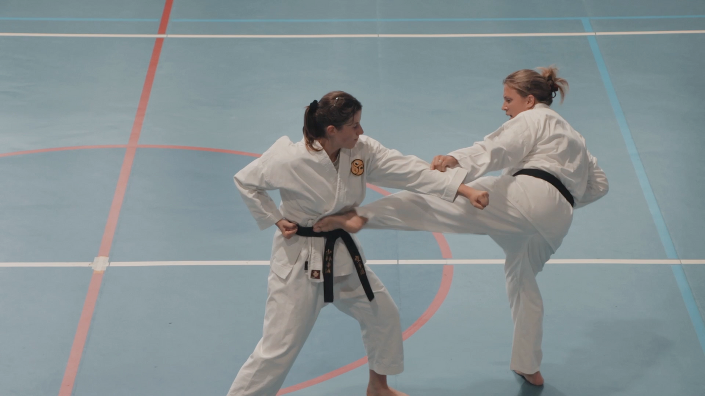
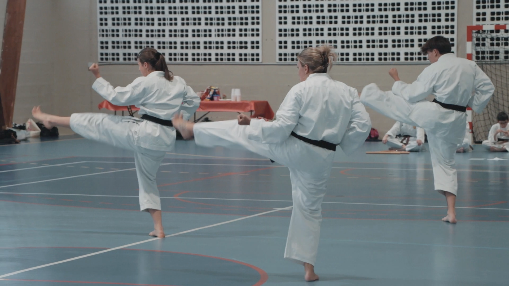

Fondée sur l'enseignement exigeant du style Shorinji Ryu, notre école transmet les principes fondamentaux de la "Voie de la main nue".
Au-delà de l'apprentissage purement physique, nous privilégions le développement mental, la sérénité et le respect réciproque entre pratiquants.

Les Katas constituent le cœur battant du Karaté Shorinji Ryu. Chaque forme est une séquence codifiée d'attaques et de défenses virtuelles contre plusieurs adversaires.
À travers l'étude approfondie du Bunkai (application martiale avec partenaire), les pratiquants découvrent la réalité des clés, projections et frappes aux points vitaux dissimulés dans les formes traditionnelles.

Répétition rigoureuse des blocages, coups de poing et coups de pied. Développement de la vitesse, de la stabilité, de l'équilibre et de la puissance d'impact.
Travail en binôme et assauts contrôlés. Apprentissage de la gestion de la distance (Ma-ai), du timing et du sang-froid face à un partenaire.
Mises en situation pratiques pour neutraliser rapidement une agression. Techniques efficaces de déviation, d'esquive et de riposte proportionnée.
Les cours de Karaté sont dispensés au Gymnase Pierre de Coubertin pour les enfants à partir de 7 ans, ainsi que pour les ados et adultes sans limite d'âge.